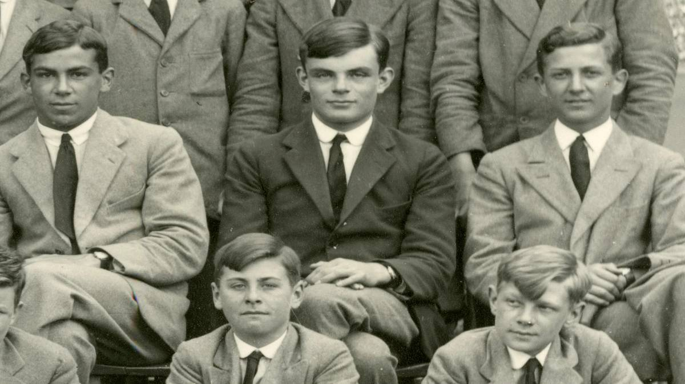
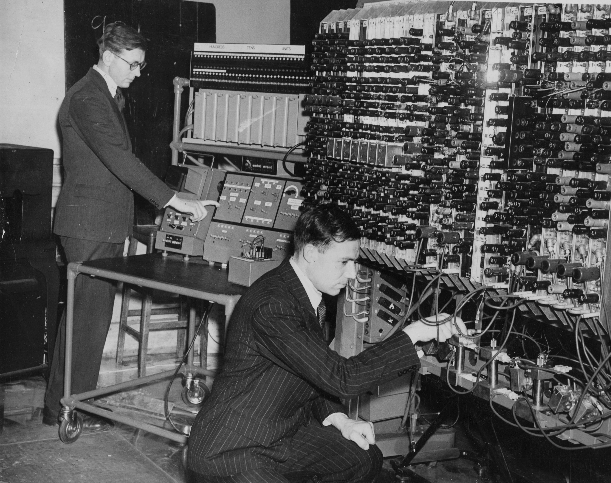

Turing nació en el distrito londinense de Maida Vale.Su padre, Julius Mathison Turing (1873-1944), era miembro del cuerpo de funcionarios británicos en la India. Su madre, Ethel Sara Stoney, hija de Edward Waller Stoney, ingeniero jefe de Madras Railways. Los Stoney eran una familia de la nobleza protestante angloirlandesa de los condados de Tipperary y Longford, mientras que la propia Ethel había pasado gran parte de su infancia en el condado de Clare.
En 1936 publicó un ensayo titulado On Computable Numbers (Sobre números calculables), con el que contribuyó a la lógica matemática al introducir el concepto teórico de un dispositivo de cálculo que hoy se conoce como la máquina de Turing. Además, amplió su trabajo matemático al estudio de la inteligencia artificial y las formas biológicas. Durante la II Guerra Mundial trabajó como criptógrafo para el Foreign Office británico. Después de la guerra, trabajó en el Laboratorio Nacional de Física, donde diseñó el Motor de Computación Automática, uno de los primeros diseños para una computadora con programa almacenado
La máquina bautizada como Bombe era un dispositivo electromecánico que usaron los analistas criptógrafos británicos para poder resolver los mensajes enviados desde la máquina alemana Enigma en la Segunda Guerra Mundial. Bombe fue de hecho un trabajo derivado del esfuerzo de los criptógrafos polacos quienes tenían copias de la máquina alemana, junto con los detalles de ka “bomba criptológica”, antes de que se invadiera Polonia. La versión británica fue diseñada por Alan Turing y refinada por Gordon Welchman.
